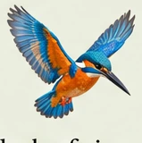
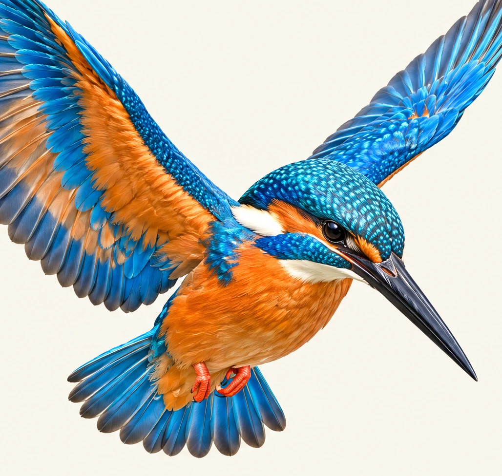

A flash of river blue
Why the kingfisher's feathers shimmer like light on water through structural refraction.

“Blink, and the river keeps its secret.”
Found along clear, slow-moving rivers, streams, and lakes across Europe, Asia, and North Africa. Perches on low branches over water to hunt.
Unlike pigment-based feathers, the Common Kingfisher's electric azure sheen is produced by spongy keratin nanostructures that scatter blue wavelengths via constructive interference.